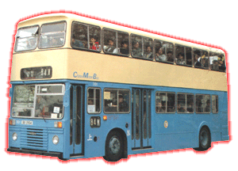
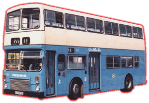

 |
 |
* DD 1 * |
* SD 2 * |
| 型號 Model
引擎 Engine 容積 Engine Capacity 波箱 Gearbox 車身 Body Build
體積 Volume
載客量 Passenger
登記年份 Year |
: DD 1 : SD (1 - 6) : Gardner 6LXB (165 bhp) : 10.45 Litres : Voith DIWA 851 (3-Speed Automatic) : East Lancashire Coachbuilders (DD 1) Walter Alexander (Type RL) (SD 1 - 6) : 10185L X 2500W X 4400H(mm) [DD 1] 9570L X 2500W X 4165H(mm) [SD 1 - 6] : (DD 1) U61 L40 (SD 1 - 6) U57 L33 S18 : 1979 - 1997 |
Dennis Dominator [丹尼士統治者型] 樣版車於1979年在港島中巴車隊中出現，DD 1 乃是香港第一輛裝有 East Lancs 外裳的巴士，除了其全新面貌示人外，冷卻水箱設於車頭，選用葉片彈簧懸掛係統及全自動變速箱，引擎仍原用 Gardner 的產品，初期行走海傍快線為主，後來被改作為後備車用。
中巴覺得其性能可靠，並於1982年再購入多六部 Dominator，由於車身比 DD 短，所以車隊編號為 SD，此車選用了 Alexander 車身，而由 SD 4-6都改了氣墊式懸掛，行車時乘客亦比較舒適 ; 因為身型較短和矮關係，所以此六部都成為山頂 15 號線的主力巴士，多年來為來港遊客接載往返市區與山頂之間，此車亦能完成其重要任務，直至後期因為零件不足理由，而要續步退出此重要路線，由 SF 和空調巴士接手為止。退出 15 線後，仍活躍於後備車隊中，直到 1997 年才宣告 7 部 Dominator 全數退役，服務亦只不過十五年矣...